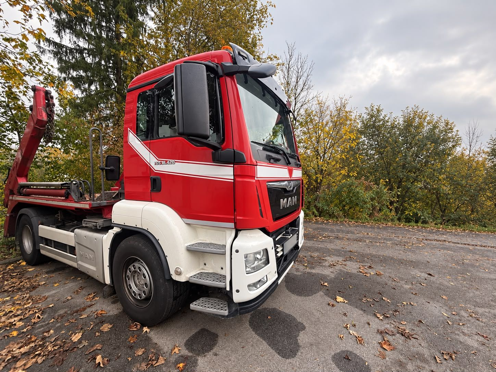
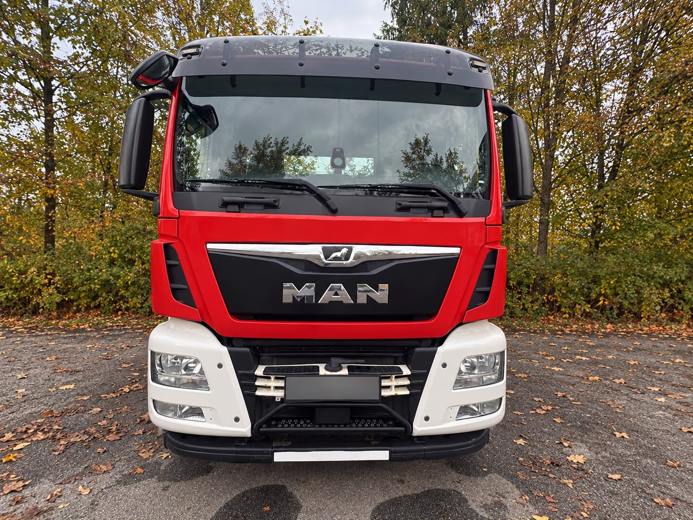

Ohne Kipper steht jede Baustelle still. Sie bringen Sand, Kies und Schotter, fahren Aushub ab, liefern Asphalt und räumen im Winter für die Kommune. Kaum ein Nutzfahrzeug ist so vielseitig und wird so hart beansprucht.
Wer einen gebrauchten Kipper-LKW kaufen oder verkaufen will, sollte die Bauarten genau unterscheiden können, denn davon hängt ab, wer das Fahrzeug später einsetzen kann. In diesem Beitrag erklären wir die Kipper-Arten, die wichtigsten Angaben im Fahrzeugschein und was beim Kauf und Verkauf zählt.
Was ist ein Kipper?
Ein Kipper ist ein LKW, dessen Ladefläche sich hydraulisch anheben lässt, sodass die Ladung von selbst herausrutscht. Der Aufbau heißt je nach Form Kippbrücke oder Kippmulde. Angehoben wird er von einem oder mehreren Hydraulikzylindern, die über einen Nebenabtrieb vom LKW-Motor versorgt werden.
Kipper gibt es in allen Gewichtsklassen: vom 3,5-Tonner mit Führerschein B über den Atego-Kipper im Bauhof bis zur vierachsigen Baustellenmaschine mit 32 Tonnen. Dazu kommen Kippsattelauflieger und Kipperanhänger.
Die Kipper-Arten im Überblick
Dreiseitenkipper
Der Dreiseitenkipper kann nach hinten und zu beiden Seiten kippen. Die Ladefläche hat klappbare Bordwände, er ist also im Grunde eine Pritsche mit Kippfunktion. Das macht ihn sehr flexibel: Er kann seitlich neben einem Graben abkippen und trotzdem Paletten oder Material laden. Typisch ist er auf Zweiachsern und leichteren Dreiachsern, etwa bei Garten- und Landschaftsbauern, Handwerksbetrieben und Bauhöfen.
Hinterkipper und Muldenkipper
Der Hinterkipper kippt nur nach hinten. Bei schweren Baustellen-LKW ist die Ladefläche meist eine Mulde: ein Stahl- oder Aluminiumkasten ohne seitliche Bordwände, oft mit abgerundetem Boden. Die runde Form ohne Ecken heißt im Handel auch Halfpipe. Sie entleert sich sauber, auch bei klebrigem Material.
Muldenkipper ist allerdings auch der Name für die großen, knickgelenkten oder starren Dumper im Erdbau, die nicht auf öffentlichen Straßen fahren. Bei der Suche nach einem gebrauchten Muldenkipper lohnt deshalb ein genauer Blick, was gemeint ist.
Absetzkipper
Der Absetzkipper hebt mit zwei schwenkbaren Armen einen Container, die Absetzmulde, auf und setzt ihn wieder ab. Der Container bleibt beim Kunden stehen und wird später gegen einen leeren getauscht. Absetzkipper sind das typische Fahrzeug von Containerdiensten und Entsorgungsbetrieben.

Abrollkipper
Der Abrollkipper arbeitet mit einem Hakenarm, der größere Abrollcontainer auf den LKW zieht und wieder abrollt. Er kann sehr unterschiedliche Container aufnehmen, von der offenen Mulde bis zum Pressbehälter. Abrollkipper fahren häufig zwei- oder dreiachsig und oft mit Anhänger.
Kippsattelauflieger
Für große Mengen über weitere Strecken nutzt man Sattelzugmaschinen mit Kippauflieger. Sie laden mehr als ein Solo-Kipper, sind aber auf der Baustelle weniger wendig.

Kipper mit Kran
Viele Kipper haben hinter dem Fahrerhaus oder am Heck einen Ladekran. Damit kann der Fahrer Material, Steine auf Paletten oder Rohre selbst laden. Ein Kran macht den Kipper vielseitiger, bringt aber eigene Prüfpflichten mit (dazu weiter unten).
Was bedeuten 2646, 6x4 und 8x4?
Bei vielen LKW stehen die wichtigsten Daten schon in der Typenbezeichnung. Bei Mercedes-Benz nennen die ersten beiden Ziffern das zulässige Gesamtgewicht in Tonnen, die letzten beiden die Motorleistung in Zehner-PS. Ein Actros 2646 ist also ein 26-Tonner mit rund 460 PS. Bei MAN steht es ähnlich im Namen, etwa TGS 33.440 für 33 Tonnen technisch zulässig und 440 PS.
Die Radformel beschreibt Räder und Antrieb:
- 4x2: zwei Achsen, eine davon angetrieben
- 6x4: drei Achsen, zwei angetrieben, der typische schwere Baustellenkipper
- 6x6: drei Achsen mit Allradantrieb, für Baustellen abseits befestigter Wege
- 8x4: vier Achsen, zwei angetrieben, die Klasse mit der größten Nutzlast
Für die Zulassung in Deutschland gelten 18 Tonnen bei zwei Achsen, bis 26 Tonnen bei drei und 32 Tonnen bei vier Achsen. Geländegängige Kipper tragen im Fahrzeugschein oft den Zusatz G, etwa N3G. Was hinter den Fahrzeugklassen steckt, erklärt unser Beitrag Fahrzeugklassen N1 bis M3.

Hersteller und Aufbauten
Die Fahrgestelle der meisten Kipper in Deutschland kommen von Mercedes-Benz, MAN, Volvo, Scania, DAF und Iveco. Bei Mercedes-Benz sind es heute vor allem Arocs und Atego, früher Actros und Axor. Die Unterschiede erklären unsere Beiträge Arocs oder Actros? und Mercedes-Benz Atego.
Die Kippaufbauten stammen von spezialisierten Herstellern, in Deutschland zum Beispiel von Meiller. Beim Kippauflieger sind Hersteller wie Schmitz Cargobull, Langendorf und Carnehl verbreitet. Für die Bewertung zählen der Hersteller des Aufbaus, sein Baujahr und das Material: Aluminium ist leichter und bringt mehr Nutzlast, Stahl verträgt grobes Material wie Bruchsteine besser.
Was gilt für Kipper bei Maut, Ladung und Kran?
- Maut: Kipper über 3,5 Tonnen sind mautpflichtig, für Handwerksbetriebe gibt es bei Fahrzeugen unter 7,5 Tonnen eine Ausnahme. Die Höhe hängt unter anderem von der Euro-Norm und der CO2-Klasse ab.
- Ladungssicherung: Schüttgut muss so geladen sein, dass nichts herabfällt oder herausweht (§ 22 StVO). Viele Kipper haben deshalb eine Abdeckplane oder ein Rollverdeck.
- Ladekran: LKW-Anbaukrane müssen nach der Betriebssicherheitsverordnung regelmäßig, mindestens jährlich, von einer befähigten Person geprüft werden. Das Ergebnis steht im Kranprüfbuch.
- Führerschein: Für Kipper bis 3,5 Tonnen reicht die Klasse B, darüber braucht der Fahrer die Klasse C1 oder C.
Kipper-LKW gebraucht kaufen: Darauf sollten Sie achten
- Aufbau passend zum Einsatz. Ein Dreiseitenkipper ist für den Garten- und Landschaftsbau ideal, für schweren Abbruch ist eine Stahlmulde besser.
- Nutzlast ausrechnen. Zulässiges Gesamtgewicht minus Leergewicht laut Fahrzeugschein. Schwere Ausstattung wie Kran oder Allrad kostet Nutzlast.
- Kipphydraulik. Lassen Sie die Brücke ganz anheben und wieder absenken. Der Zylinder sollte gleichmäßig und ohne Rucken laufen.
- Rahmen und Aufbau. Kipper werden hart beansprucht. Ein Blick unter den Aufbau gehört zu jeder Besichtigung.
- Antrieb. Bei 6x6 und Allrad sollten Verteilergetriebe und Sperren funktionieren.
- Unterlagen. Wartungsnachweise, Datenblatt des Aufbaus und bei einem Kran das Prüfbuch.
Gebrauchte Kipper und Baustellen-LKW aus unserem Bestand finden Sie unter Fahrzeuge, weitere Informationen zum Verkauf auf der Seite LKW Handel.
Kipper verkaufen: Diese Angaben braucht ein Ankäufer
Wenn Sie Ihren Kipper verkaufen möchten, bekommen Sie mit diesen Angaben schneller ein belastbares Angebot:
- Hersteller, Modell, Erstzulassung und Radformel, zum Beispiel 6x4
- Kilometerstand, Motorleistung, Getriebe und Euro-Norm
- Art des Kippers: Dreiseitenkipper, Mulde, Absetz- oder Abrollkipper
- Hersteller, Baujahr und Material des Aufbaus
- Ausstattung wie Ladekran, Abdeckung, Anhängerkupplung oder Allrad
- bei Kran: Hersteller, Typ und Datum der letzten Prüfung
- Fotos: Front, Heck, beide Seiten, Aufbau angehoben, Innenraum, Kilometerstand und Typenschilder
- Standort des Fahrzeugs

Was Sie vor der Übergabe selbst erledigen müssen, etwa beim Maut-Gerät und beim Fahrtenschreiber, steht in unserem Beitrag Nutzfahrzeug verkaufen: Was Sie beachten müssen. Wie ein Ankauf grundsätzlich abläuft, erklärt der Beitrag LKW Ankauf.
Was ist ein gebrauchter Kipper wert? Oft weniger, als Verkäufer erwarten
- Kipper arbeiten hart. Baustelle, Schotter und Staub hinterlassen Spuren. Käufer rechnen deshalb vorsichtig.
- Das Angebot ist groß. Kipper gehören zu den häufigsten Baufahrzeugen, und bei gängigen Modellen stehen viele ähnliche Fahrzeuge zum Verkauf.
- Die Euro-Norm kostet bei der Maut Geld. Ältere Abgasstufen zahlen je Kilometer mehr, was den Kreis der Käufer im Inland kleiner macht.
- Der Aufbau passt nicht für jeden. Ein Absetzkipper ist für ein Containerunternehmen wertvoll, für einen Baubetrieb kaum.
- Inseratspreise sind Wunschpreise. Was in Börsen steht, ist noch nicht verkauft.
- Ein Händler hat Kosten. Abholung, Standzeit, Aufbereitung, Papiere und das Verkaufsrisiko müssen aus der Differenz gedeckt werden.
Gefragt sind gebrauchte Kipper trotzdem, im Inland wie im Ausland. Robuste Fahrgestelle mit bewährter Technik finden oft auch dort Käufer, wo andere Regeln gelten als in Deutschland.
Kipper verkaufen an die ECS GmbH
Wir kaufen Kipper aller Gewichtsklassen und Bauarten an, vom Dreiseitenkipper bis zum Abrollkipper, dazu Kippauflieger, Betonmischer, Betonpumpen und andere Baufahrzeuge. Unser Sitz ist Gehrden bei Hannover, angekauft wird in ganz Deutschland.
- Über 30 Jahre Erfahrung im Fahrzeughandel und ein Netzwerk von über 250 Partnern
- Wir kaufen selbst an: Ihr Vertragspartner ist die ECS GmbH
- Angebot in den meisten Fällen noch am selben Tag, wenn Daten und Fotos vorliegen
- Abholung an Ihrem Standort
- Auch für den Export: Um Ausfuhrpapiere, Verzollung und Transport kümmern wir uns
Alle Einzelheiten stehen auf unseren Seiten LKW Ankauf und Bau- und Kommunalfahrzeuge verkaufen. Mehr zu Betonfahrzeugen lesen Sie in unseren Beiträgen zum Betonmischer-LKW und zur Betonpumpe.
Möchten Sie wissen, was wir für Ihren Kipper anbieten? Schicken Sie uns die Daten über die Kontaktseite.
Hinweis: Dieser Beitrag dient der allgemeinen Information und ersetzt keine Rechts- oder Steuerberatung. Alle Angaben ohne Gewähr, Stand: 17. November 2026. Genannte Marken und Modellbezeichnungen gehören ihren jeweiligen Inhabern. Die ECS GmbH ist ein unabhängiger Händler und steht in keiner Verbindung zu den Herstellern.